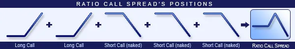

Ratio Call Spread strategy is the opposite of Call Ratio Backspread. The difference is that in this strategy, the Short Calls have higher strikes. Consequently, loss is going to be unlimited and profit is going to be limited. Because of the unlimited risk, increasing volatility is harmful for the position. This strategy is not recommended. Stagnating share prices make the situation better. The strategy consists of Short and Long Call options with the same expiration, but different quantities. Typically, the ratio of the sold/purchased Call options is 2:1 or 3:2. The potential loss is unlimited. The direction of the market is neutral/decreasing. The trader speculates on low volatility shares with stagnating prices. The profit is maximised when the share closes at the upper breakeven point. The investment should be short-term, maximum one month.
Ratio Call Spread Option Position 1
or
Ratio Call Spread Option Position 2
Buy one or two lower strike Call options.
Sell two or three higher strike Call options.
The ratio of purchased/sold options should be 1:2 or 2:3.
Buy back the Short options and sell the Long options.
Close the position the above-mentioned way.
Ratio Call Spread strategy example with ABCD traded at $25.37 on 25.05.2017.
The investor buys a Long Call option with a strike price of $25.00, expiring in June 2017, and costing $3.11 (premium).
Then, sells two Short Call options with a strike price of $27.50, expiring in June 2017, and costing $1.52 (premium).